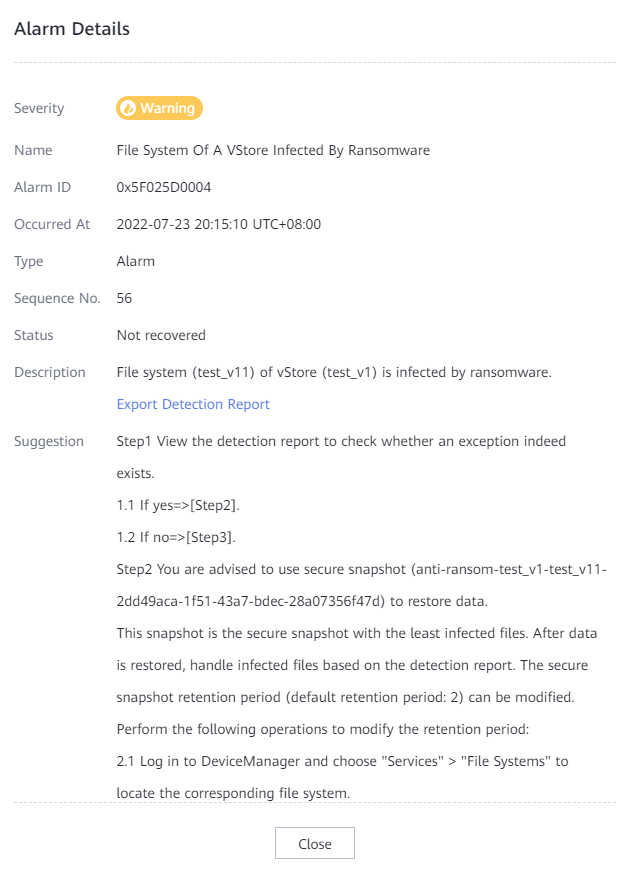

This section describes how to view real-time ransomware detection results.
Procedure
- On the navigation pane, choose .
- In the Real-time Ransomware Detection Alarms area, view alarms.
- If an alarm exists, perform the following steps to view the alarm information.
- Click the alarm information to go to the Alarms and Events page.
- Locate the alarm and click the alarm description. The alarm details show the vStore and file system infected by ransomware. Click Export Detection Report.

- Set File Name After Exporting and click OK. A message is displayed indicating that the file export command is delivered successfully.

- Click Export Records, select the latest detection report, and choose More > Download.
- You are advised to open the downloaded report using Notepad. The file column in the report displays the file system name and information about the files infected by ransomware.